التواصل
التصاميم
الرئيسية
تصميم
لافت
نظيف
بارز عن غيره
يترك أثرًا
مخصصة
للـ YouTube
@klldesigns كل المنصات

تصاميم صور مصغرة
مقدمة من طرف المبدع
ـليل
قبل
بعد
إسحب للمقارنة !

تواصل معنا – للتعاون المهني وخدمات التصميم
TikTok
@klldesigns
Instagram
@klldesigns
X
@klldesigns
@klldesigns كل المنصات